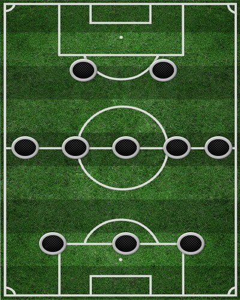

Схема 3-5-2 (“тотальний футбол”)
У такій побудові особлива роль приділяється крайнім півзахисникам, які відповідають за всю брівку, граючи у захисті та в атаці. Якщо флангові півзахисники не встигають повернутися назад, один із опорників відходить на місце центрального оборонця, таким чином вибудовується лінія з 4-х захисників.
В атаці схема «3-5-2» працює наступним чином: два опорні півзахисники виконують функції розігрувальних (вони повинні вміти добре бачити поле та володіти точним першим пасом). Третій центральний півзахисник висувається на позицію плеймейкера. Його обов’язок вивести форвардів на ворота або пробити самому з далекої дистанції. Флангові півзахисники повинні мати хорошу техніку, дриблінг і швидкість, щоб пройти по брівці і навісити або прострілити в штрафний майдан. Що стосується нападників, то тренери часто виставляють два різні гравці: один таранний з функціями таргетмена (боротьба за м’яч у штрафному майданчику, гра «в стінку»), інший – спритний і швидкий, який підбиратиме м’ячі та гратиме на випередження захисників, при цьому володіючи гарним ударом і може відходити в середину поля для отримання м’яча та «розгону» атаки. Яскравим прикладом у Росії є ПФК ЦСКА епохи Валерія Газзаєва, який вперше виграв Кубок УЄФА, а у світовому футболі — туринський «Ювентус» зразка середини — третьої чверті 2010-х р.р. — і загалом італійські команди чи команди з практикуючими італійськими тренерами.
Поточна позиція команди: 3
Найкращий бомбардир: Русин (16)
Найкращий асистент: Гереро (7)